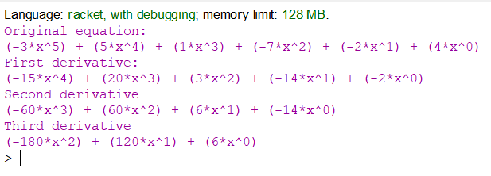

Вибір середовища
Racket — це універсальна багатопарадигмальна мова програмування та мультиплатформенний дистрибутив, який включає мову Racket, компілятор, велику стандартну бібліотеку, IDE, засоби розробки та набір додаткових мов. Мова Racket є сучасним діалектом Lisp і нащадком Scheme. Він створений як платформа для проектування та впровадження мови програмування. На додаток до основної мови Racket, Racket також використовується для позначення сімейства мов програмування та набору інструментів, що підтримують розробку на Racket і з ним. Racket також використовується для створення сценаріїв, навчання інформатиці та досліджень. Racket призначений для розробки програм та мов програмування. Це означає, що з його допомогою можна досліджувати не лише те, як писати програми, а й чому саме так.
Задача
Написати програму символьного диференціювання по одній змінній поліному, який заданий списком своїх коефіцієнтів та степенем у вигляді: f(x) = a0xn + a1xn-1 +...+ an-1x + an. Знайти першу, другу та третю похідні. Результати вивести у вигляді символьного виразу. Значення поліному та його похідних при заданому користувачем значенні змінної не обчислювати.
Код програми
#lang racket
(define (deriv pol)
(if (not (null? (cdr pol)))
(append (list (* (car pol)
(- (length pol) 1)))
(deriv (cdr pol)))'()))
(define (print-pol pol)
(when (not (null? pol))
(when (not (= (car pol) 0))
(begin (display "(") (display (car pol)) (display "*x^")
(display (- (length pol) 1)) (display ")")
(if (not (null? (cdr pol)))
(begin (display (if (not (= (cadr pol) 0))" + " ""))
(print-pol (cdr pol))) (newline))))))
(define polynomial (list -3 5 1 -7 -2 4))
(define d1 (deriv polynomial))
(define d2 (deriv d1))
(define d3 (deriv d2))
(display "Original equation:\n")
(print-pol polynomial)
(display "First derivative:\n")
(print-pol d1)
(display "Second derivative\n")
(print-pol d2)
(display "Third derivative\n")
(print-pol d3)
Результати роботи програми
source file link
Висновок
Після проведеної роботи було реалізовано програму, яка вираховує похідні функції.